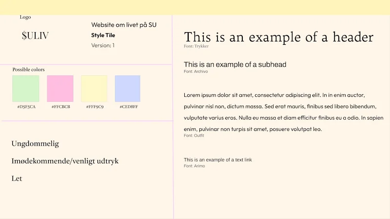

Tema - 3
Grundlæggende UX/UI
Om tema 3
I dette emne har vi fået indblik i samspillet mellem UX (User experience) og UI (User interface). Desuden har vi også fået forståelse for de værktøjer, metoder og teorier, der kan anvendes i design, research og test i forbindelse med digital produktudvikling. Her fik vi en forståelse for hvorfor dette samspil er vigtigt i designvalget, i stedet for blot at gå med mavefornemmelser.
Vi skulle selv finde på en hjemmeside, vi ville lave og om hvad. Vi havde frie tøjler til hvad den skulle handle om og hvordan den skulle se ud. I processen lærte vi om forskellige researchmetoder såsom desk research og observationsresearch. Derudover blev vi introduceret til forskellige tests såsom 5-sekunders test og tænkehøjt test.
Hvad har jeg lært?
- At benytte sig af forskellige research metoder(Desk research og observationsresearch)
- At få inspiration og ideudvikle ved hjælp af moodboard, storyboard, Crazy 8's, solution sketch, sitemap og layoutdiagram.
- At udvikle wireframes og prototyper
- At lave forskellige tests (5 sekunders test og tænkehøjt tests, lighthouse test)
- At udvikle en forståelse for UX/UI konventioner
Processen for 03.03.01 Kodet site
Research, Moodboard, Style Tile og Storyboard
Jeg researchede andre kultur websites, som omhandlede samme emne. Jeg valgte at lave en hjemmeside til studerende, og hvordan man stadig kan have et liv og hygge sig med sine venner, selvom pengepungen ikke rækker så langt.
Gennem desk research finder man information der allerede findes om emnet og inspiration til egen hjemmeside. Jeg researchede andre kultur websites, som omhandlede det jeg ville lave om. Derudover foretog jeg observationsresearch ved at besøge studenterhuset og observere andre studerendes vaner. Det er en kvalitativ research metode, hvor man observerer folks handlinger på et sted, der er relevant for emnet. Mit research gav mig et indblik i, hvad min hjemmeside skulle omhandle og hvordan den skulle se ud, hvilket førte mig til mit moodboard.
Jeg lærte hvordan jeg kunne afspejle den stemning, jeg ønskede at formidle på hjemmesiden ved hjælp af moodboard. Jeg lærte hertil også at lave et style tile for at præcisere mit design med hvilke fonte, farver og elementer, jeg ville have på min hjemmeside. Samtidig lærte jeg at lave et sitemap, som er et enkelt diagram af hvordan strukturen på hjemmesiden skal stilles op - så et overblik over informationshierakiet.
Derudover interviewede jeg min veninde, som var i målgruppen for min hjemmeside. Dette gav mig længere og mere dybdegående svar. Baseret på interviewet udarbejdede jeg et storyboard med min persona, Alma. Storyboardet er med at tydeliggøre og visualisere min proces fra start til slut og det beskrev, hvordan jeg ønskede, at min målgruppe skulle opfatte hjemmesiden.
Moodboard
Storyboard

Style Tile
Desk Research


Sketches og prototype
Vi begyndte at arbejde på hjemmesidens udseende og indledte vores designprocess. Her startede vi med at lave The Four Step Sketch, hvor vi brugte de første 20 minutter på at skrive ned, hvilke indsigter vi hidtil havde opnået. Derefter brugte vi de næste 20 minutter på at brainstorme ideer og lave hurtige skitser. I de sidste tre minutter udvalgte vi den bedste ide. Efterfølgende lavede vi "crazy 8's", hvor vi havde otte minutter til at skitsere otte forskellige versioner af den valgte ide. Til allersidste i denne opgave brugte vi 30-90 minutter på lave en Solution Sketch, som blev vores foreløbige valgte skitse.
Vores Solution Sketch blev hængt op i klassen, og derefter gik vi rundt for at se på de andre sketches. Vi udvalgte nogle funktioner og ideer, som vi godt kunne lide, og skrev kommentarer til dem.
Efterfølgende lavede jeg min wireframe i figma, som var mit første udgangspunkt hjemmesidens visuelle udtryk. En wireframe fungerer som et visuelt skelet af hjemmesiden, som hjælper med at planlægge hjemmesidens grundlæggende layout. Derfra begyndte jeg at udvikle UI gennem min prototype, der byggede på wireframen. UI er den visuelle og interaktive del af designet, hvorimod UX fokuserer på brugerens oplevelse af designet og det interaktive system, som man finder ud af gennem forskellige test af designet. En prototype er en første version af hjemmesiden, der viser, hvordan jeg på det tidspunkt forestillede mig, at hjemmesiden skulle se ud. Jeg tilføjede billeder, indhold og tekst til prototypen for at teste forskellige aspekter af hjemmesiden og få en fornemmelse af, hvordan brugeroplevelsen ville være.
Prototype

Solution sketch

Test og slutprocessen
Efter at have færdiggjort prototypen, gik jeg i gang med at evaluere hjemmesidens funktionalitet og forståelse, samt om den blev opfattet på samme måde, som jeg havde til hensigt at den skulle. Vi udførte en tænkehøjt-test med tre deltagere: den der havde lavet sitet, en testperson, der tænkte højt gennem testprocessen, og til sidst en observatør, der tog noter om testpersonens tanker. Dette gav mig indsigt i testpersonens oplevelse af designet, det vil sige UX (User experience). Vi udførte også en Lighthouse-test af vores hjemmeside, der viste performance, tilgængelighed, best practices og SEO. Dette gav mig en overordnet vurdering af, hvordan min hjemmeside klarede sig, og hvad der skulle ændres.
Efterfølgende gik jeg i gang med at kode med fokus på UX (brugeroplevelse) for at opnå den bedst mulige løsning for denne hjemmesides funktion. Jeg inkorporerede den indsigt, jeg havde opnået, primært inden for UX, og tog også hensyn til UI.
Som det sidste i dette projekt, efter kodningen, skulle vi præsentere vores hjemmeside foran klassen ved hjælp af en PowerPoint præsentation.
Det endelig resultat af min hjemmeside er endt en smule anderledes end forventet, da jeg havde nogle udfordringer, jeg ikke kunne finde ud af, såsom at lave en åben burgermenu. Men det ved jeg nu, og fremover, er jeg klar over mine egne færdigheder.